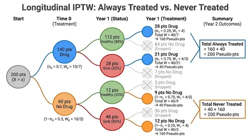

November 18, 2026
Inverse probability of treatment weighting (IPTW) is a causal inference method that restores balance between the treatment and control groups [covariate balance] by equalizing the weighted number of subjects within each subgroup of covariates.
Let's start with an example. Say we have observational data with 30 people. We have measurements for one covariate — smoking status — and whether they were in the treatment or control group.
We summarize the data, and observe the following:
Raw observed data30 real people, exactly as they showed up in the data
| Smoking status | Treatment, n (%) | Control, n (%) | Total |
|---|---|---|---|
| Smoker | 1 (16.7%) | 9 (37.5%) | 10 |
| Non-smoker | 5 (83.3%) | 15 (62.5%) | 20 |
| Total | 6 (100%) | 24 (100%) | 30 |
Three things are off here:
Normally, in a 1:1 randomized controlled trial — where every subject has a 50/50 chance of landing in either group — we would expect those 10 smokers to split into 5 treated and 5 control, and those 20 non-smokers to split into 10 treated and 10 control.
The balanced table, if we could run a 1:1 randomized controlled trial, would look something like this:
Data if we could run a 1:1 randomized controlled trialThe world we're trying to recreate
| Smoking status | Treatment, n (%) | Control, n (%) | Total |
|---|---|---|---|
| Smoker | 5 (33.3%) | 5 (33.3%) | 10 |
| Non-smoker | 10 (66.7%) | 10 (66.7%) | 20 |
| Total | 15 (100%) | 15 (100%) | 30 |
Notice how:
Through IPTW, we essentially want to recreate what we would see in a 1:1 randomized controlled trial. I'll go over the mathematical mechanics shortly, but essentially we mathematically weight the subjects in the treatment and control groups so that our [pseudo-population] — meaning our effective population after applying the weights — looks like this:
Data when we use IPTW on the raw observational dataWeighted counts — nobody new was enrolled, everybody just counts for more
| Smoking status | Treatment, weighted n (%) | Control, weighted n (%) | Total |
|---|---|---|---|
| Smoker | 10 (33.3%) | 10 (33.3%) | 20 |
| Non-smoker | 20 (66.7%) | 20 (66.7%) | 40 |
| Total | 30 (100%) | 30 (100%) | 60 |
Notice how:
We call it a pseudo-population because the total effective population is 60, when in fact we only had 30 real subjects in our observational data. But our pseudo-population now looks like what we would see in a 1:1 randomized controlled trial — and that resemblance is the whole point.
What does it actually mean mathematically when we say that IPTW "removes confounding" by creating stochastic balance [stochastic balance]?
In causal inference, a baseline variable L (like smoking status or severity of illness) acts as a [confounder] when it influences both who gets the treatment (A) and the final health outcome (Y). Because L influences treatment assignment, there is a statistical link between the confounder and the treatment: knowing a patient's covariate profile gives you information about how likely they are to receive the drug.
We can see this link clearly in our raw observational data:
Because 0.10 ≠ 0.25, treatment assignment is dependent on smoking status. If you know whether someone smokes, you can better predict whether they got the drug. In the language of causal diagrams, there is an arrow pointing from the confounder to the treatment (L → A).
Now look at what happens after we apply our IPTW weights to create the pseudo-population:
In the weighted pseudo-population, knowing a patient's covariate profile gives you zero information about whether they received the treatment. Whether a patient is a smoker or a non-smoker, sick or healthy, they have the exact same 50/50 chance of being in the treatment group or the control group.
One precision note: the 0.50 here is this example's number — each group is scaled to the full population, so the split lands at 50/50. The general claim is the equality, not the 0.50: after weighting, the probability of treatment no longer varies with the covariate profile.
By equalizing the treatment probabilities across every covariate profile, IPTW makes treatment statistically independent of the confounders [independence of treatment and confounders in the pseudo-population]. Smoking will still affect a patient's heart attack risk (L → Y is still there), but it no longer dictates who gets the drug (no more L → A). By severing the link between the confounders and the treatment, IPTW eliminates selection bias [selection bias] and lets us measure the pure causal effect of the drug.
Here are a few reasons why you would choose IPTW over other causal inference methods, such as matching:
Notice how, when we constructed our pseudo-population, we didn't throw out a single data point — we simply weighted subjects differently to restore balance between the treatment and control groups. By contrast, matching forces you to discard unmatched subjects (such as excess control subjects left over after pairing, or treated subjects with no close match in the control group).
You want to calculate the [average treatment effect] — the effect of the treatment across the entire population — rather than just the [average treatment effect on the treated], which is what standard matching targets.
In the real world, we only observe one outcome per person: we see what happened to the treatment group with the drug, and what happened to the control group without it. IPTW estimates the missing potential outcomes [potential outcomes] by scaling each group up to represent the entire population:
The average treatment effect is simply the difference between those two weighted averages: the expected outcome if all subjects in the population received treatment minus the expected outcome if all subjects did not receive treatment.
You are running a time-varying analysis, where treatment at time 0 changes a patient's covariates at time 1, which in turn affects whether they receive treatment at time 1 [treatment–confounder feedback]. Matching and ordinary regression adjustment break down here; IPTW doesn't. We work a full example of this in section 13.
In an observational study, we face the fundamental problem of causal inference [fundamental problem of causal inference]: for any single patient, we only observe one potential outcome. If they took the drug, we observe Y1, and their untreated outcome Y0 is missing. If they didn't take the drug, we observe Y0, and their treated outcome Y1 is missing.
IPTW doesn't guess the missing outcome for each individual person one by one. Instead, it fills in the missing outcomes at the covariate-group (and population) level using the weights:
Each treated person counts for themselves plus the similar people who didn't get treated. Each control person counts for themselves plus the similar people who did. That's the entire trick — everything else is machinery for doing it carefully.
Now let's actually run through the mathematics for how we calculated this weighted population:
Mechanics of calculating the weights and the pseudo-populationπ is the propensity score — the probability of treatment within that covariate profile
| Smoking status | Treated, n | Control, n | π = P(treatment) | Treatment weight (1/π) | Treated, weighted n | Control weight (1/(1−π)) | Control, weighted n |
|---|---|---|---|---|---|---|---|
| Smoker | 1 | 9 | 1/10 = 0.10 | 10 | 1 × 10 = 10 | 10/9 ≈ 1.11 | 9 × 10/9 = 10 |
| Non-smoker | 5 | 15 | 5/20 = 0.25 | 4 | 5 × 4 = 20 | 20/15 ≈ 1.33 | 15 × 20/15 = 20 |
| Total | 6 | 24 | — | — | 30 | — | 30 |
This is how we ended with 30 weighted control subjects and 30 weighted treatment subjects, for a total balanced pseudo-population of 60.
Drag the propensity score π and watch the two weights move. Notice what happens near the edges — that's the extreme-weights problem from section 9, arriving early.
Each treated person counts as 5 people in the pseudo-population.
Each control person counts as 1.25 people in the pseudo-population.
At π = 0.20 this is our 10-patient profile from section 5: 2 treated × 5 = 10, and 8 controls × 1.25 = 10. Balanced.
One way to check for balance in the pseudo-population is to create a Table 1 (which is covered in other blog posts). But essentially, we look at the [standardized mean difference] between the treatment and the control group for each of the covariates, before and after the weighting.
Recall that the standardized mean difference is essentially the difference in means between the treatment and the control group, divided by their pooled standard deviation — and we take the absolute value, because we care about the size of the imbalance, not its direction:
So it would look something like the table below. This is an illustrative example — a larger study than our 30-person toy, with 180 treated and 320 control patients:
Balance before and after weighting — illustrative exampleTreated n = 180 · Control n = 320. Continuous covariates shown as mean (SD); yes/no covariates as %.
| Covariate | Treated | Control | |SMD| before | Treated, weighted | Control, weighted | |SMD| after |
|---|---|---|---|---|---|---|
| Age, years | 62.4 (11.2) | 57.1 (10.6) | 0.486 | 59.3 | 59.0 | 0.028 |
| Systolic blood pressure, mm Hg | 138 (18) | 130 (17) | 0.457 | 133.2 | 132.8 | 0.023 |
| Smoker | 24% | 45% | 0.453 | 33.8% | 33.3% | 0.011 |
| Diabetes | 38% | 22% | 0.355 | 28.4% | 27.9% | 0.011 |
| Body mass index | 29.8 (5.4) | 28.3 (5.1) | 0.286 | 28.9 | 28.8 | 0.019 |
| Male | 58% | 52% | 0.121 | 54.5% | 54.0% | 0.010 |
Notice how the standardized mean difference decreased significantly after weighting the data — every covariate drops from well above the 0.1 line to well below it. We can also visualize this table in an SMD plot [Love plot]:
Standardized mean differences before and after weighting
Covariates sorted by their unweighted |SMD|, largest first. The dashed line marks the 0.1 rule of thumb. Use the toggle to isolate a view.
You might need to go back to the propensity score model — the logistic regression model that determines the weights — and refine it. For example, by including covariates that were not included the first time but are actually needed, or by adding interactions or flexible terms. It isn't cheating to refine the propensity model at this stage, because we haven't looked at the outcomes yet.
In general, you would tune and iterate the logistic regression model, then reassess balance to see how well the propensity scores are doing at achieving covariate balance. Balance first, outcomes second — that ordering is what keeps the process honest.
Like all observational causal inference methods, IPTW relies on the [exchangeability] (or [ignorability]) assumption — meaning that our measured covariates L fully capture all confounding, and there are no hidden, unmeasured confounders.
To see what exchangeability actually means in plain English, look back at our 10-patient covariate profile, where the propensity score of receiving the drug is 0.2 (2 patients got the treatment, and 8 were in the control group).
[Conditional exchangeability] simply says that within this specific covariate profile, every single one of those 10 patients had the exact same 20% likelihood of receiving the drug, and it was purely by chance that those specific 2 patients were the ones who got it. There is nothing secretly "special" or different about the 2 treated patients compared to the 8 control patients — meaning there are no hidden, unmeasured variables separating them, and you could freely swap (or exchange) any of the subjects within that profile.
Why does this matter for IPTW? Remember that IPTW works by giving each of those 2 treated patients a weight of 5, so they count as 10 patients — standing in for both themselves and the 8 control patients whose treated outcomes are missing. That "stand-in" trick is only valid if those 2 treated patients are genuinely interchangeable with the other 8.
Say those 2 specific patients were only given the drug because they had a severe, unrecorded symptom — a hidden confounder [unmeasured confounding] that we didn't include in L. Then they are not fair stand-ins for the 8 healthier control patients. By weighting those 2 secretly sicker patients up by 5, we aren't creating an unbiased pseudo-population — we are just multiplying that hidden, unmeasured bias by 5 across the entire group.
The second assumption is [positivity]: every subject must have some chance — not zero, not one — of receiving either treatment or control, given their covariates: 0 < π(L) < 1 for every covariate profile that occurs. If some profile is always treated, there is nobody in the control group to stand in for them, and no weighting scheme can fix that. Keep positivity in mind — it comes back, wearing a disguise, in the next section.
Okay, so what happens when we have very large weights? And what can we do about it?
First, some intuition on why large weights happen: think of it as how odd that subject is, in terms of their propensity to receive treatment versus what they actually received. If a subject received treatment but their propensity to receive treatment was very low, that results in a very large weight. Similarly, if the propensity to receive treatment was very high but the subject was in the control group, that also results in a very large weight.
We can see this mathematically with the propensity score π. If they're in the treatment group, the weight is 1/π — so if π is very low but they're in the treatment group, the weight is going to be high. If the subject is in the control group, the weight is 1/(1 − π) — so if π is very high, the weight is also going to be very high. (Go back to the weight explorer and push π toward 0.01 or 0.99 to feel this.)
This is a problem because very large weights distort the population, and therefore the estimated expected outcomes. Say one very odd subject contributes a pseudo-population of, let's say, 10,000 subjects. If we didn't have that subject in the study, we might only have a pseudo-population of 100 subjects. If we calculate the expected outcome including this very odd subject — who counts for 10,000 subjects in the pseudo-population — the expected outcome is going to skew very heavily toward the outcome of this one very odd subject.
Extreme weights are also a problem because they lead to larger standard errors. For intuition, think of bootstrapping [bootstrap], which is a way to estimate standard error: we take samples from the population with replacement, record our estimate, and repeat that B times. The standard deviation of the distribution of those draws is basically the standard error. Now, if we have one subject who is worth 10,000 subjects, sometimes we're going to draw that subject in our bootstrap sample, and sometimes we're not. If we do draw them, the statistic we calculate skews heavily toward that subject; if we don't, the statistic will be essentially normal. The statistic for that sample really depends on whether this extremely heavy subject is in the sample or not — and you can see how including this heavy subject increases the standard deviation of the bootstrap distribution, compared to a world where the heavy subject did not exist.
Recall that the [positivity] assumption means the propensity to receive treatment is not deterministic — it is not 0 or 1. Any given subject in the population has some probability of receiving either treatment or control. Extreme weights mean the propensity score is very close to 0 or 1. It's not exactly 0 or 1, so positivity isn't technically violated — but it's getting very close.
First, we want to quantify the problem by looking at the distribution of the weights. One way is to plot the distribution and just see the percentage or frequency of weights that are extreme:
Distribution of IPTW weights — illustrative example
Most patients carry small, well-behaved weights near 1–3. A long, thin tail stretches to the right.
Another good plot: put each patient's rank on the x-axis and their weight on the y-axis, and you can see exactly where the weights start to become extreme:
Weights by rank — illustrative example
Sorted smallest to largest. Flat and boring for almost everyone — then a wall at the far right.
Or you could use whichever method you like — summary statistics, box plots, or your favorite way of checking the distribution of any set of numbers.
The first option is to pull out the rows with very high weights and check them manually for anything odd. For example: is it a data entry problem? Are the covariates nonsensical?
Or is there potentially a problem with the logistic regression model used to calculate the propensity scores? Here's one common reason for very high weights. Say there's one covariate, and let's call it covariate X. The typical range of X falls within −0.5 to 0.5 units — let's say 99.9% of the values in the observed dataset fall within that range. But then we observe one subject with X = 10 units, well outside the typical range. After looking at it, we determine that 10 units is an anomaly, but it is valid in the dataset.
Our logistic regression model might be very good at predicting the probability of treatment when X is within −0.5 to 0.5. But once X becomes 10, the model basically has no information around that range, so it's not very good at predicting the propensity of treatment for that covariate profile. If you look at a logistic regression curve, −0.5 to 0.5 sits within the near-linear middle part of the S-curve. Out near the tails, where the curve flattens out, multiple curves can still fit the data well. At x = 10, the propensity score could be 0.7, 0.8, 0.9, or 0.99 — all reasonable fits to the data at −0.5 to 0.5, but we're basically just guessing at the extreme. And of course, propensity scores of 0.7, 0.8, 0.9, and 0.99 would all affect that subject's weight drastically differently (a treated patient at π = 0.99 is fine; a control patient there gets weight 100).
Many logistic curves fit the data you have — and disagree about the data you don't
Four curves that are nearly identical where 99.9% of patients live (−0.5 to 0.5, shaded) fan out to very different propensity scores at x = 10.
Another option is to remove the subjects with extreme weights. This can be justified by making the positivity assumption more plausible — remember, at the extremes the propensity to receive treatment is almost deterministic, and we don't want that.
Let's first look at the distribution of propensity scores in the treated and control groups:
Propensity score distributions and the trimming cutoffs
Blue: control patients. Orange: treated patients. Green band: the overlap we keep. Grey tails: trimmed away.
A major problem arises at the extreme edges — the "tails" of these two distributions. Suppose you have treated patients with a 95% propensity score, and almost zero control patients ever score that high. That means there are no comparable untreated patients in that range. Furthermore, if one rare control outlier does exist up at 99%, their IPTW weight will be 1/(1 − 0.99) = 100 — meaning that single person will count as 100 people and make the causal estimate wildly unstable.
How it works: Look only at your control group first and find where their scores top out — specifically, the 98th percentile. Suppose 98% of your control patients have a propensity score of 0.75 or lower (only a tiny 2% of control outliers scored higher). That means 0.75 is the practical "ceiling" where control patients stop existing in meaningful numbers. Next, apply that 0.75 ceiling to your dataset and remove any treated patients (and the few control outliers) who scored above 0.75. Why? Because above 0.75, treated patients have no real control counterparts to be compared against.
How it works: Now flip the process and look only at your treated group to find where their scores bottom out — specifically, the 2nd percentile. Suppose 98% of your treated patients have a propensity score of 0.15 or higher, and only 2% scored below 0.15. That means 0.15 is the practical "floor" below which treated patients virtually disappear. Apply that 0.15 floor to your dataset and remove any control patients (and the few treated outliers) who scored below 0.15. Why? Because a control patient with a score of 0.02 is someone who would almost never be prescribed the drug in the real world, leaving nobody in the treated group down there to compare them to.
Once you slice off the extreme right tail (where only treated patients exist) and the extreme left tail (where only control patients exist), you are left strictly with the [common support] middle zone — in our example, patients scoring between 0.15 and 0.75. Trimming gives you two major wins, along with one important trade-off:
The other option — whether we trim the tails or not — is to simply cap (or truncate) the weights [weight truncation] at a certain maximum value. Unlike trimming, we aren't dropping anyone from the dataset. Instead, we decide ahead of time on a maximum allowable weight:
The trade-off, in short:
When we truncate, we reduce the variance of our estimate because a single extreme observation can no longer dominate the sample. However, because we are manually altering the weights and no longer properly weighting that subpopulation to achieve perfect balance, we let a small amount of confounding slip back in — which introduces bias. Ultimately, this is a classic [bias–variance trade-off]: the decision is whether a big decrease in variance is worth a small increase in bias.
Simulation studies have shown that when you only truncate a small number of extreme outlier weights (like at the 98th or 99th percentile), the massive drop in variance usually outweighs the tiny increase in bias, leading to a lower overall MSE and a much more reliable estimate. In practice, you should compare your truncated and untruncated estimates side by side as a sensitivity analysis [sensitivity analysis], to verify that your overall conclusion remains consistent while your confidence intervals tighten up.
To understand a marginal structural model [marginal structural model], we first have to understand the difference between modeling observed outcomes versus potential outcomes:
In standard statistics, when you want to control for a bunch of confounding variables (like age, blood pressure, and health history), you throw them all into your regression equation. That gives you a conditional effect [conditional effect] — the effect of the drug holding age and blood pressure strictly constant.
An MSM is marginal because it doesn't force those background variables into the final regression equation. Thanks to our IPTW weights, all those background variables have already been balanced out behind the scenes. Marginalizing simply means this: because our weights have already smoothed out differences in things like age and blood pressure between groups, those factors don't need to clutter up our final equation. We can remove them from the regression model and zoom out to look at the big-picture, population-level relationship [marginal effect] between the treatment and the outcome.
There are different types of marginal structural models, and I'll briefly outline some of the common ones below. Essentially, once we fit these models onto the pseudo-population, we can answer different questions about the treatment effect on potential outcomes — the model type is chosen by the link function [link function]:
Common marginal structural modelsSame pseudo-population, three different questions
| Model type | What it calculates | The question it answers | In plain English |
|---|---|---|---|
| Linear MSM (identity link) | Average treatment effect | "What is the absolute difference in heart attack rates if everyone took the drug versus if no one did?" | Measures a flat, absolute change — e.g., "the drug prevents 3 heart attacks per 100 people across the population." |
| Log-link MSM (log link) | Causal relative risk | "What is the ratio of heart attack risk if everyone took the drug versus if no one did?" | Measures a proportional scaling factor — e.g., "taking the drug scales your risk down to 70% of what it would have been." |
| Logistic MSM (logit link) | Causal odds ratio | "How do the odds of a heart attack compare between a world where everyone takes the drug versus no one?" | Compares the odds of the event occurring under the two counterfactual worlds (commonly used in case-control or logistic regression workflows). |
As an example, let's walk through fitting a linear marginal structural model onto the pseudo-population. As we just said, the linear MSM basically helps us determine the average treatment effect. Previously, we saw how IPTW lets us calculate the ATE by taking the standard average in our treated pseudo-population (E[Y1]) minus the standard average in our control pseudo-population (E[Y0]). If we write out a simple linear MSM, it looks just like a standard regression equation, with one crucial difference:
You may ask: why can't we just fit this model on our raw observational data using standard regression, E[Y | A = a]? Because that formula answers an associative question: "What was the average outcome among the subset of patients who actually received treatment versus the subset who did not?" We can calculate this directly from raw observed data, because we know which group each patient ended up in and what happened to them — but because of confounding, those two groups aren't comparable (e.g., unhealthy patients received the drug and healthy patients did not).
In a marginal structural model, E[Ya], the question is fundamentally different: "What would the expected outcome be across all patients if everyone were given treatment, versus if no one were given treatment?" In the real world, we are missing half of the data needed to answer this. For the observed treated group, we don't have data showing what their outcomes would have been had they gone untreated; for the control group, we don't have data showing what would have happened had they been treated.
IPTW gives us a methodology to bypass this missing-data problem: by weighting each group to represent the entire population, we construct a balanced pseudo-population that mimics those missing potential outcomes, allowing us to fit a standard regression model directly on the weighted data (the pseudo-population).
Here is where IPTW bridges the gap. Look back at how we built our pseudo-population in the 10-patient example:
In this weighted pseudo-population, both groups have been scaled up to represent the exact same 10-patient profile, completely erasing confounding. Because the weighted treatment group is now an exact mirror of the entire population (just like in a randomized controlled trial), we no longer have to worry about selection bias. Simply looking at the outcomes of the treated group inside our pseudo-population tells us what would happen if the entire population were given the drug — and looking at the weighted control group tells us what would happen if no one were given the drug. In practice, this means we can treat the weighted pseudo-population as if its observed outcomes are the potential outcomes.
Mathematically, when you run a standard generalized linear model [generalized linear model] — like linear or logistic regression — the software estimates parameters by solving an equation that balances the weighted differences (residuals) between each patient's observed outcome Y and the model's predicted average. To fit an MSM, we use the exact same regression machinery, but we multiply each patient's contribution by their IPTW weight W:
In our 10-patient example, the software gives each of the 2 treated patients 5 times the voice in the regression, and each of the 8 control patients 1.25 times the voice. Because the regression is now fitting directly to the unconfounded pseudo-population, the coefficients that come out of your standard regression software are no longer biased observational associations — they are the causal parameters of your marginal structural model.
Suppose you balanced 30 confounders using IPTW, and now you want to know if the drug works differently for patients with diabetes (V = 1) versus without diabetes (V = 0) [effect modification]. Instead of wrestling with 30 covariates, you only include treatment a, diabetes status V, and their interaction in your weighted regression:
…while keeping all other 29 confounders safely marginalized (averaged out) in the background.
Notice that in our 10-patient profile, weighting turned 2 treated patients and 8 control patients into 10 weighted treated patients and 10 weighted control patients (20 total "pseudo-patients"). Because weighting artificially inflates the apparent sample size, standard regression software will think you have more data than you really do, and output standard errors that are too small. Therefore, when fitting an MSM on weighted data, always pair your model with robust "sandwich" standard errors [robust sandwich standard errors] or bootstrapping, so your confidence intervals reflect your true sample size.
One of the most common points of confusion when learning IPTW is that you end up running regression models at two entirely different stages of the analysis. Because both involve fitting a model, it's easy to mix them up. To keep them straight, remember that they have completely different jobs, inputs, and goals. Here is how to tell them apart:
Two models, two completely different jobs
| Feature | Model 1: the propensity score model | Model 2: the marginal structural model |
|---|---|---|
| What is its main job? | To calculate the probability of treatment and build the weights. | To estimate the actual causal effect of the treatment on your outcome. |
| What goes into the model? | Your covariates (L) predict the treatment (A). | The treatment (A) predicts the outcome (Y) — fitted as a weighted regression, where the IPTW weights enter as regression weights, not as a predictor variable. |
| Do you include your 30 confounders? | Yes. You throw all your background variables (age, blood pressure, history) into this model to figure out selection bias. | No. The weights have already balanced out those confounders behind the scenes, keeping your final equation clean. |
| What kind of model is it? | Almost always a logistic regression (since treatment status is binary: 0 or 1). | A weighted regression chosen based on your outcome type (e.g., linear regression for continuous outcomes, logistic or log-link regression for binary outcomes like heart attacks). |
| What comes out of it? | A propensity score (π) for each patient, which becomes a weight (1/π or 1/(1 − π)). | A causal parameter — such as a causal relative risk, odds ratio, or mean difference. |
You use a logistic regression across your raw observational data to look at all the messy confounding factors and figure out who tended to get the drug. You turn those predictions into weights.
You multiply your patients by those weights, creating a balanced world where confounding is erased — and check balance (section 7) before going further.
You run a standard regression (linear or logistic) directly on that weighted pseudo-population. Because the weights did the heavy lifting beforehand, the coefficient you get out is your true, unconfounded causal effect.
Up to this point, we've seen how IPTW lets us estimate causal effects. By modeling the probability of receiving treatment (the propensity score) and weighting our patients accordingly, we create a balanced pseudo-population where we can calculate the expected outcome if everyone received the drug (E[Y1]), the expected outcome if no one received the drug (E[Y0]), and the difference between them — the average treatment effect.
There is just one lingering question with IPTW: what if our propensity score model is wrong? In the real world, we don't know the true mathematical formula that doctors used to prescribe the drug. If we accidentally miss an important interaction term or a non-linear relationship when building our propensity score model, our weights will be off, and our causal estimate will be biased.
Enter doubly robust estimators [doubly robust / augmented IPTW] — also known as augmented inverse probability of treatment weighting (AIPTW). The main idea is simple: instead of relying entirely on a single model to remove confounding, we combine two different models into one formula, so that we only have to get one of them right to get an unbiased causal estimate.
Let's first distinguish between the overall goal of the estimator and the two individual models that feed into it. The overall goal, just like standard IPTW, is to calculate the population-level potential outcomes — specifically, the average outcome if the entire population took the drug (E[Y1]) versus if no one took the drug (E[Y0]). To get there, we train two completely separate models on our raw, unweighted observed data:
Notice the symmetry: the IPTW path is unbiased if your propensity score model π(L) is correct, while the outcome regression path is unbiased if your outcome model m1(L) is correct.
A doubly robust estimator puts both models into a single equation. Let's look at how AIPTW estimates E[Y1] (the average outcome if everyone in our sample of n patients took the drug):
Here is what each variable means in plain English:
The magic of this equation is easiest to see when we also write out its algebraically rearranged version:
Look at how this acts as a built-in safety net under two different scenarios:
In short: each model acts as an insurance policy for the other.
Beyond the peace of mind of getting "two chances to be right," there are three practical reasons why data scientists and clinical researchers increasingly prefer AIPTW over standard IPTW:
"Doubly robust" does not protect against unmeasured confounding. Both models still rely on the exchangeability assumption — that you measured all the necessary confounders L in the first place. Two chances to be right about the models; no extra chances about the data.
Let's start with a group of 200 patients who all share the same baseline covariate profile — let's call it "overall health" (X). Over a 2-year period, we want to understand if patients who take a drug for 2 years straight have a lower myocardial infarction rate at year 2 than patients who do not take the drug in either year. The drug is potentially administered at time 0 and again at year 1, with the outcome measured at year 2. At time 0, some of these patients with the same initial health profile receive the drug (the treatment group) and others do not (the control group).
One year later, at year 1, the doctor reassesses each subject's covariate profile before deciding whether to prescribe the drug for the second year. Even though everyone started with the same health profile at time 0, their covariate profiles have now shifted over time — both due to the time-0 drug and due to natural factors. For example, most of the patients who took the drug at time 0 may have gotten healthier, while most of the patients who did not take the drug at time 0 may have gotten sicker.
Look at what happens if we match on health profiles at year 1. First, matching at year 1 changes our question to: "What is the isolated effect of receiving the drug at year 1 on myocardial infarction rates at year 2?" — which completely ignores the benefit the drug already produced during year 0. For instance, at year 1 we would match the healthy profiles of patients who took the drug at time 0 with the healthy profiles of patients in the control group who didn't take the drug. But this completely ignores the fact that the healthy profiles in the treatment group are newly healthy, and the healthy profiles in the control group are likely outliers, because they stayed healthy without the drug. Matching across groups at year 1 completely erases this historical information. (Furthermore, since those healthy subjects in the control group are likely rare outliers, we'd likely be throwing out a lot of information with matching.)
Now look at what happens when we use IPTW instead. Weighting preserves the patients' history at year 1 by scaling subjects within their own trajectory rather than matching across groups. In the treatment group, we look at the subjects who took the drug at both time 0 and year 1, and we weight them accordingly to stand in for the subjects who started in the treatment group at time 0 but dropped off the drug at year 1. We do the exact same thing in the control group: at year 1, we take the subjects who remained untreated in both years and weight them accordingly to stand in for the subjects who started in the control group at time 0 but dropped off the control trajectory because they were prescribed the drug at year 1.
By weighting this way, we preserve the historical covariate profile shift from time 0 to year 1 and reconstruct a pseudo-population of our original time-0 treatment and control groups — allowing us to fairly compare the myocardial infarction rates of taking the drug for 2 full years versus not taking the drug in either year.
Here is the diagram with toy numbers to illustrate the point and give mathematical intuition:

You start with 200 patients sharing the exact same baseline profile (X):
At year 1, doctors look at whether a patient is healthy or sick and decide whether to prescribe the drug for year 1. The year-1 health split: of the 140 who took the drug at time 0, 112 are healthy (80%) and 28 are sick (20%); of the 60 who didn't, 12 are healthy (20%) and 48 are sick (80%). Look at the pattern in the four branches:
Because we want to compare "always treated" (drug in both years) against "never treated" (no drug in both years) [treatment strategies], let's trace the 4 groups of patients who stayed the course and see who they are standing in for:
In longitudinal IPTW [longitudinal IPTW], a patient's final weight is simply the product of their weights at each time point (Wtotal = W0 × W1). Look at how cleanly the numbers multiply out, so that both groups represent all 200 original patients:
Final weights for the patients who stayed the courseEveryone else switched at year 1 — these are the patients who stand in for them
| Subgroup path | Observed patients, n | Time 0 weight | Year 1 weight | Total weight | Weighted pseudo-patients |
|---|---|---|---|---|---|
| Always treated (healthy at year 1) | 28 | 10/7 | 4 | 40/7 ≈ 5.71 | 28 × 40/7 = 160 |
| Always treated (sick at year 1) | 21 | 10/7 | 4/3 | 40/21 ≈ 1.90 | 21 × 40/21 = 40 |
| Total "always treated" | 49 | — | — | — | 200 |
| Never treated (healthy at year 1) | 9 | 10/3 | 4/3 | 40/9 ≈ 4.44 | 9 × 40/9 = 40 |
| Never treated (sick at year 1) | 12 | 10/3 | 4 | 40/3 ≈ 13.33 | 12 × 40/3 = 160 |
| Total "never treated" | 21 | — | — | — | 200 |
Every single group adds back up to 200:
The beauty of longitudinal IPTW is that all the heavy lifting happens during this weight-calculation step. Once you multiply the weights across each time period to get a single final weight for each patient (Wtotal), the rest of your outcome analysis is 100% identical to the single-time-point workflow we covered earlier:
Accounting for multiple time periods and time-varying confounders only changes how we build the weights. Once every patient has their final weight, you analyze the weighted pseudo-population the exact same way. That's the whole playbook: model who gets treated → build weights → check balance → handle the extremes → run a weighted regression → report a causal effect.